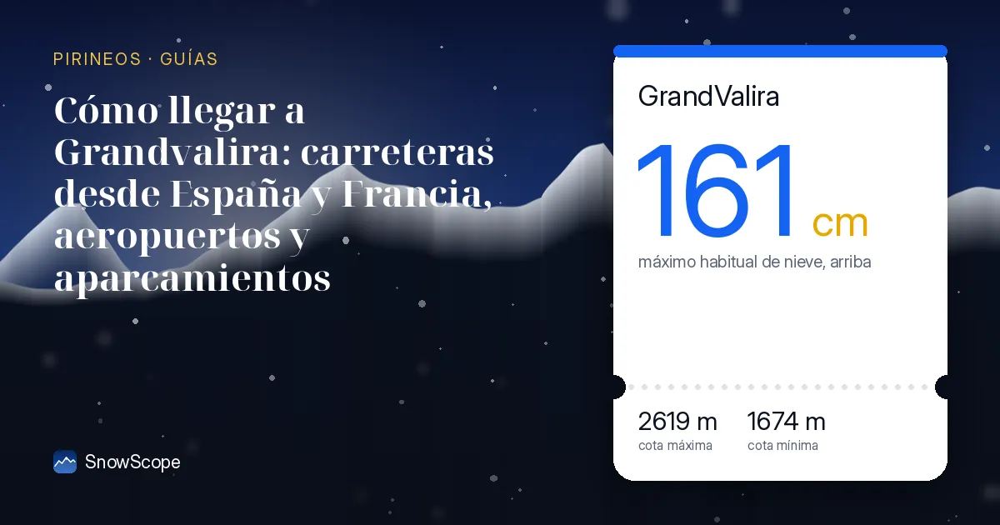
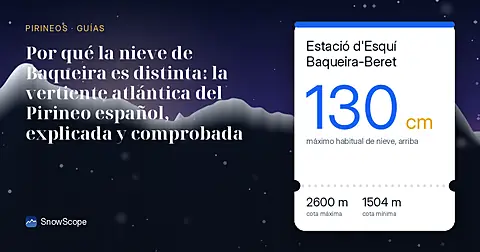

Cómo llegar a Grandvalira: carreteras desde España y Francia, aeropuertos y aparcamientos
Grandvalira se extiende por dos parroquias andorranas a lo largo de una sola carretera de valle, con accesos desde el sur español y el norte francés en Pas de la Casa. Como Andorra no tiene aeropuerto ni tren, todo esquiador conduce o coge un autobús desde Francia o España.
Consulta la previsión de nieve en tiempo real de GrandValira en la app SnowScopeEspesor de nieve, alertas de nieve polvo y mapa 3D, gratis.

Llegar desde España
El acceso desde España utiliza la autopista C-16 desde Puigcerdà o la C-145 desde Lleida, ambas convergiendo en La Seu d'Urgell unos 30 km al sur de la estación. Desde allí, la carretera CG2 sube hacia el norte al valle principal de esquí de Andorra. La ruta está abierta todo el año pero sube por encima de 2 000 m, así que neumáticos de invierno y cadenas son esenciales.
Una vez en el valle, tienes cinco zonas de acceso: Encamp al pie, luego Canillo, El Tarter, Soldeu, y por fin Grau Roig y Pas de la Casa cerca de la cresta con Francia. Cada una tiene sus propios aparcamientos y acceso a remontes, así que puedes elegir dónde aparcar según el sector que pienses esquiar.
Cruzar desde Francia
Desde Francia, la N-22 llega a Pas de la Casa en la propia frontera, el acceso más alto a Grandvalira. Pasado ese punto, dos rutas descienden al valle: la carretera abierta sobre Port d'Envalira a 2 408 m, o un túnel de peaje de 3 km abierto en 2002, que corre a unos 2 000 m y ahorra tiempo con mal tiempo.
La salida del túnel está cerca de Grau Roig, el sector de esquí más alto. Si utilizas la carretera abierta, dedica tiempo extra y comprueba las condiciones primero, ya que el viento y la nieve pueden afectar la visibilidad y la tracción en el puerto elevado.

Aeropuertos y conexiones de autobús
El aeropuerto propio de Andorra en La Seu d'Urgell, a 27 km de distancia, tiene vuelos limitados. La mayoría de esquiadores vuelan a hubs más grandes: Toulouse-Blagnac (176 km), Carcasona (176 km), Barcelona-El Prat (200 km), o Girona-Costa Brava (260 km). Desde cualquiera de estos, puedes alquilar un coche o coger un autobús a Andorra.
Grandvalira gestiona un autobús de esquí gratuito dentro de Andorra, así que una vez que llegas al país, moverte entre bases de remontes o aparcamientos no cuesta nada si tienes un forfait de la estación. Los tiempos de viaje desde los principales aeropuertos en coche son de tres a cinco horas dependiendo del tráfico y la frontera que elijas.
Dónde aparcar
Grandvalira publica conteos de espacios libres en tiempo real en sus aparcamientos más grandes. El sector El Tarter de Encamp ofrece 850 espacios al aire libre gratuitos, mientras que el aparcamiento cubierto de pago está en Soldeu, Canillo y la Funicamp en Encamp. Los fines de semana y festivos escolares, los lotes gratuitos se llenan pronto, así que consulta la página de aparcamientos de la estación antes de salir de casa o llega antes de las 09:00.
La carretera del valle (CG2) pasa por cada sector, así que no necesitas conducir la longitud completa para llegar a zonas superiores. Aparqua en tu punto de acceso elegido, coge los remontes hacia arriba, y explora todo el dominio desde allí.
Esenciales para conducir en invierno
Todas las rutas hacia Andorra suben por encima de 2 000 m en invierno. La nieve se deposita regularmente: a media montaña en Grandvalira (2 146 m) hay nieve unos 168 días en una temporada típica, con la cobertura más profunda normalmente en febrero. Lleva neumáticos de invierno, cadenas y un raspador de hielo, y comprueba las condiciones de la carretera antes de salir.
La Agencia de Tráfico de Andorra (www.mobilitat.ad) publica actualizaciones en directo sobre la CG2 y la carretera de Envalira. En tormentas, el túnel desde Francia es a menudo la opción más segura que el puerto elevado. Dedica tiempo extra si cae nieve o hay ráfagas de viento.
Qué esperar a la altitud del valle
El piso del valle en Encamp está a 1 674 m, así que la cobertura de nieve de principios de temporada es fina y pueden asomar parches rocosos. Los remontes de media montaña suben a 2 146 m, donde llega el pico de nieve típico de 102 cm, y la zona de cumbre sube a 2 619 m con un pico habitual de 161 cm. Esta diferencia de altura significa mejor fiabilidad de nieve más arriba.
En noviembre y abril, la nieve a nivel de base es rara; diciembre a marzo es cuando el valle tiene más nieve. Planifica tu viaje para enero a marzo si la profundidad de nieve es tu preocupación principal.
Consejos para esquiadores
- Reserva un coche de alquiler con antelación si llegas en avión; los horarios de autobús son frecuentes pero menos flexibles que un vehículo privado.
- Lleva equipo de invierno obligatorio: la CG2 y la carretera de Envalira cruzan 2 000 m y pueden cerrarse con nieve fuerte.
- Los fines de semana concurridos, utiliza el autobús de esquí gratuito de la estación entre sectores en lugar de mover tu coche.
- Consulta el sitio web de la Agencia de Tráfico de Andorra la mañana que viajes; en tormentas, el túnel desde Francia es a menudo más seguro que el puerto abierto.
- Antes de ir fuera de pista en cualquier lugar de Andorra, lee el boletín oficial de aludes del Servei Meteorològic Nacional d'Andorra.
Sobre estas cifras
Los espesores de nieve de las estaciones son la nieve más profunda en las pistas altas en la fecha indicada; son estimaciones para una zona, no una medida en un punto. Las previsiones pueden cambiar. Consulta siempre el boletín oficial de aludes antes de salir fuera de pista.
Boletines oficiales de aludes: Servei Meteorològic Nacional d'Andorra – Estat de la neu
Citar este informe
Para investigación, docencia o prensa: cifras y gráficos reutilizables libremente bajo CC BY 4.0 con esta cita.
SnowScope (2026), Cómo llegar a Grandvalira: carreteras desde España y Francia, aeropuertos y aparcamientos, https://snowscope.app/blog/es/2026/11/how-to-get-to-grandvalira-andorra-roads-airports-parking.html, consultado el 2026-11-09
SnowScope (Atlas Labs). (2026, November 9). Cómo llegar a Grandvalira: carreteras desde España y Francia, aeropuertos y aparcamientos. SnowScope snow reports. https://snowscope.app/blog/es/2026/11/how-to-get-to-grandvalira-andorra-roads-airports-parking.html
BibTeX
@misc{snowscope2026howtogettograndvaliraand,
author = {{SnowScope (Atlas Labs)}},
title = {Cómo llegar a Grandvalira: carreteras desde España y Francia, aeropuertos y aparcamientos},
year = {2026},
month = nov,
howpublished = {\url{https://snowscope.app/blog/es/2026/11/how-to-get-to-grandvalira-andorra-roads-airports-parking.html}},
note = {Published 2026-11-09 16:44 UTC; accessed 2026-11-09}
}· CC BY 4.0 · Métodos, datos y herramientas →
GrandValira: nieve y temperatura según la altura, este invierno vs el pasado (herramientas) →
Sigue GrandValira
Gratis: un aviso cuando llega la nieve y la previsión cada mañana.
Más partes de nieve

Cómo aprovechar un día en Luz-Ardiden, una pequeña estación sobre Luz-Saint-Sauveur en los Altos Pirineos: la carretera, los dos sectores, la nieve de 46 inviernos pasados y qué semanas elegir.

El nivel de congelación alcanza 3400m–3600m durante los próximos tres días, trayendo lluvia al manto de nieve del 09 al 11 de noviembre. Previsión del 08 de noviembre.

Baqueira-Beret está en el Valle de Arán, en la vertiente atlántica del Pirineo. Qué significa para su nieve, comprobado con 46 inviernos pasados frente a La Molina, y cuándo ir.